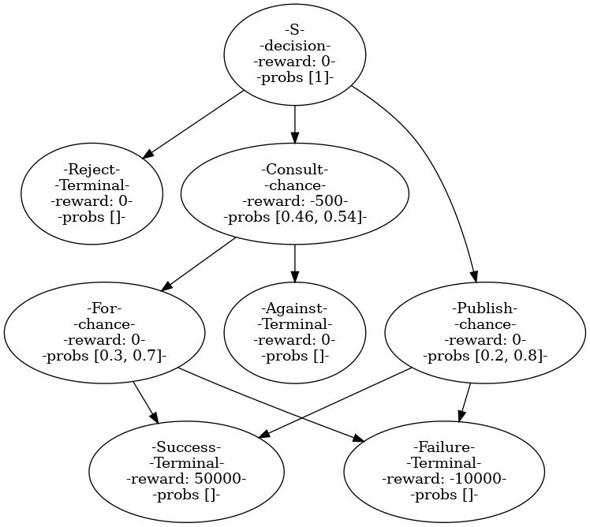

Markov Decision Processes
classical AI
Modelling using MDPs, Policy Evaluation and Value Iteration.

MDP
- Problems in which there is uncertainity in the environemnt so you can not run the usual search algorithms. we use MDPs.
- We can formalize problems with uncertainity as an MDP.
- Policy -> what to do from the current state, i.e, which state to move to next. a map from every state to the next state.
- Solution of an MDP is a policy.
- To represent the problem as a graph we use states as nodes and then we use a new type of node called a chance node to represent the uncertainity.
- TODO: Comparision of search and MDP problem formulations. (at 19:18)
[[Policy evaluation]]: How good is a policy?
- Following a policy yields a random path(due to randomness in env). The [[utility]] of a policy is the discounted sum of the rewards on this path. The [[value]] of a policy is the [[expected utility]] of the policy.
- value is defined for each node.
- Value of a policy \(V_{p}\) (s) = expected utility by following policy p from state s.
- [[Q-value]] of a policy \(Q_p\) (s, a) = expected utility of taking action a from state s and then following policy p.
- Q-value is expected utility from chance node.
- \(V_p\) (s) = {0 if IsEnd(s) = True or \(Q_p\)(s, a)} where a = Policy(s).
- \(Q_p\)(s, a) = \(\sum_{s'}^{}\) T(s, a, s’) * [R(s, a, s’) + \(\gamma\) * \(V_p\)(s’)]
- Sometimes \(V_p\) from the above equations gives a [[closed form]] equation. here we solve directly.
- Sometimes The equations becomes reccursive. Then we assign intiial values of all states to 0 and iterate on the equations for every state to get value of the state in next time step and continue the process for a fixed number of iterations or until the delta is less than some value(convergence).
[[Optimal value]]:
- \(V_{opt}\) (s) = maximim value atttained by any policy.
- . \(Q_{opt}\)(s, a) = \(\sum_{s'}^{}\) T(s, a, s’) * [R(s, a, s’) + \(\gamma\) * \(V_{opt}\)(s’)]
- \(V_{opt}\)(s,a) = {0 of IsEnd(s) = True , \(max_{actions(s)}\) \(Q_{opt}\) (s, a)}
- This mean optimal policy \(P_{opt}\) (s) = \[argmax_{a \in actions} Q_{opt} (s, a)\]
- This is [[value iteration]].